ImageOcc2.0
Image Occlusion addon for Anki
DOCUMENTÇÃO DESACTUALIZADA - Por favor consultar a documentação em inglês
Image Occlusion (Oclusão de Imagem)
2.0
Contacto do autor (em
inglês e português):
tmbb@campus.ul.pt- Image Occlusion (Oclusão de Imagem) 2.0
Introduction
Este addon permite acrescentar cartas de
oclusão de imagem à colecção do Anki. Cartas de oclusão de imagens não
são mais do que cloze deletions
ou preenchimento de espaços, mas com imagens
Geralmente o utilizador esconde partes de uma imagem, e durante as repetições tem de identificar a parte escondida.
A técnica de occlusão de imagens é discutida no site do supermemo (www.supermemo.com/articles/flow.htm#Occlusion test, em inglês).
Na prática, o utilizador escolhe geralmente uma imagem com legendas, e esconde as legendas que quer identificar durante as repetições. Como uma imagem vale 1000 palavras (e esta é apenas uma das 38 cardas criadas de uma só vez apartir da imagem original):
Geralmente o utilizador esconde partes de uma imagem, e durante as repetições tem de identificar a parte escondida.
A técnica de occlusão de imagens é discutida no site do supermemo (www.supermemo.com/articles/flow.htm#Occlusion test, em inglês).
Na prática, o utilizador escolhe geralmente uma imagem com legendas, e esconde as legendas que quer identificar durante as repetições. Como uma imagem vale 1000 palavras (e esta é apenas uma das 38 cardas criadas de uma só vez apartir da imagem original):
| Pergunta: |
Resposta: |
| 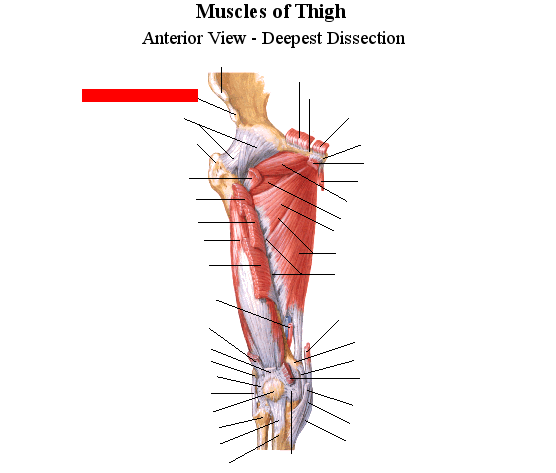 |
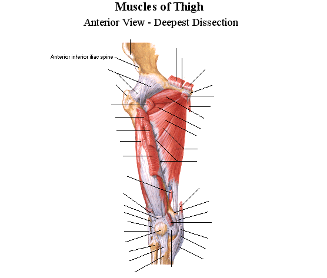 |
Utilização
básica
O addon é muito simples. No editor de
notas (note editor), apareceu
um novo botão contendo o texto Image Occlusion (na fotografia abaixo
ignorem o panda, o relâmpago e os flocos de neve; estes são de alguns
dos meus outros addons; para saber mais sobre eles: panda, relâmpago,
flocos de neve).
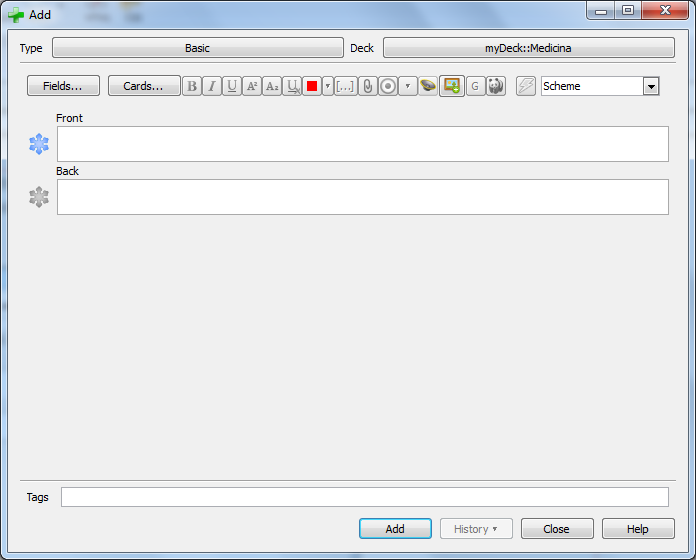
Para adocionar novas cartas do tipo Oclusão de Imagem à colecção, clique nesse botão. Vai aparecer uma janela a pedir para escolher um ficheiro de imagem para servir de base às cartas. Escolha o ficheiro, e uma nova janela vai aparecer, com um editor de imagem contendo a imagem pronta para ser editada.
As cartas são criadas desenhando formas sobre a imagem original. Há várias formas que se pode sesenhar, e as formas podem ser agrupadas de modo a cobrir partes não contíguas da imagem. Na grande maioria dos casos é mais conveniente utilizar rectângulos. Vamos ver como tudo se processa desde o início.
Instruções passo a
passo
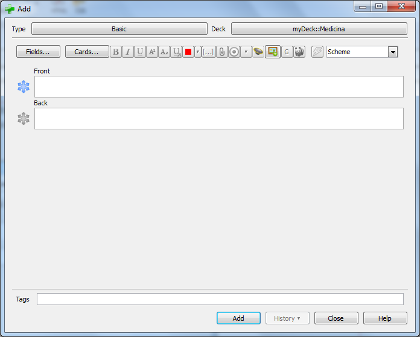
Para adocionar novas cartas do tipo Oclusão de Imagem à colecção, clique nesse botão. Vai aparecer uma janela a pedir para escolher um ficheiro de imagem para servir de base às cartas. Escolha o ficheiro, e uma nova janela vai aparecer, com um editor de imagem contendo a imagem pronta para ser editada.
As cartas são criadas desenhando formas sobre a imagem original. Há várias formas que se pode sesenhar, e as formas podem ser agrupadas de modo a cobrir partes não contíguas da imagem. Na grande maioria dos casos é mais conveniente utilizar rectângulos. Vamos ver como tudo se processa desde o início.
Instruções passo a
passo
1
Abra o editor de
notas (note editor), clicando no botão Add
do browser de decks, por exemplo.
2
Clique no botão Image Occlusion.
3
Escolha a imagem
que quer utilizar. Eu escolhi uma umagem do atlas
do Netter, que retrata uma disecção profunda dos músculos da coxa).
Também é possível utilizar uma imagem da área de transferência (clipboard).
Também é possível utilizar uma imagem da área de transferência (clipboard).
4
Um editor de imagens irá aparecer.
Para além de mostrar a área de edição de imagem, a versõ actual permite escolher (opcionalmente):
As imagens que incluídas neste documento ainda não mostram estas possibilidades, uma vez que foram retiradas da documentação da versão anterior. Ainda não foram actualizadas por falta de tempo.
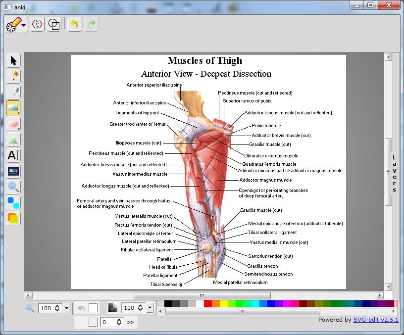
Para além de mostrar a área de edição de imagem, a versõ actual permite escolher (opcionalmente):
- Cabeçalho (Header): aparece acima da imagem durante as repetições
- Rodapé (Footer): aparece abaixo da imagem durante as repetições
- Tags: são adicionados às notas criadas. Esta é a maneira de adicionar tags às cartas de Oclusão de imagem. Mudar os tags no editor de notas não afecta os tags das cartas de Oclusão de Imagem
As imagens que incluídas neste documento ainda não mostram estas possibilidades, uma vez que foram retiradas da documentação da versão anterior. Ainda não foram actualizadas por falta de tempo.
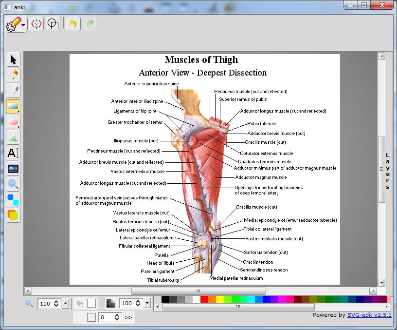
5
Pode agora começar
a desenhar rectângulos sobre as legendas que quer esconder.
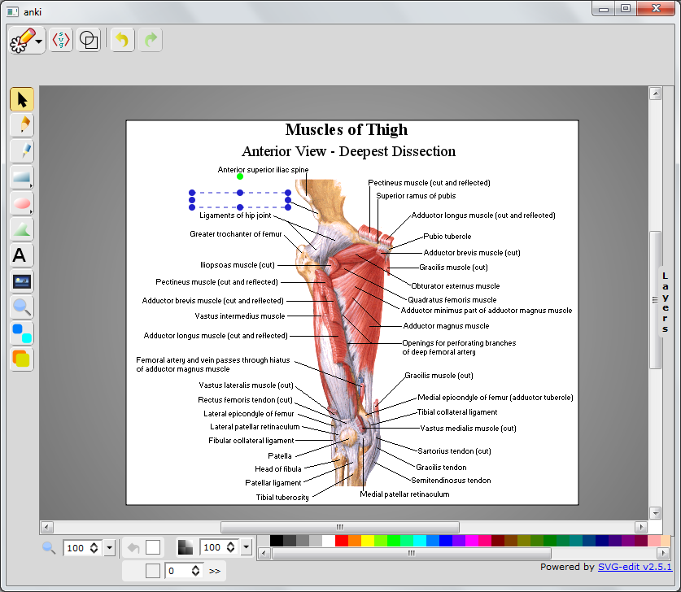
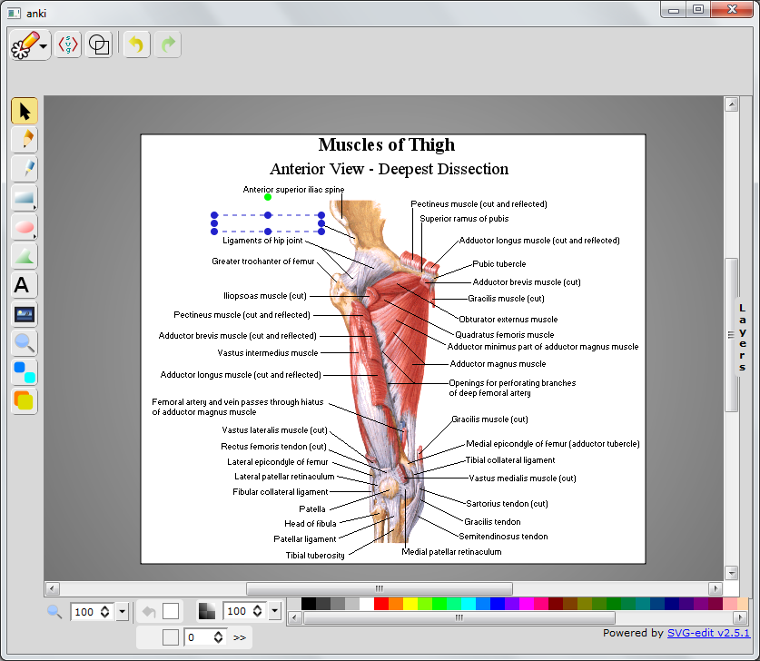
6
A ferramenta
inicial no editor é a ferramenta rectângulo, e portanto é possível
começar a desenhar rectângulos (o caso mais comum) assim que a imagem
aparece. Os rectângulos são inicialmente brancos, mas a cor pode ser
mudada no painel de coros no fundo do ecrã.
Na seguinte imagem, a ferramenta rectângulo está marcada com uma seta:
Na seguinte imagem, a ferramenta rectângulo está marcada com uma seta:

7
Repita para todas
as legendas.
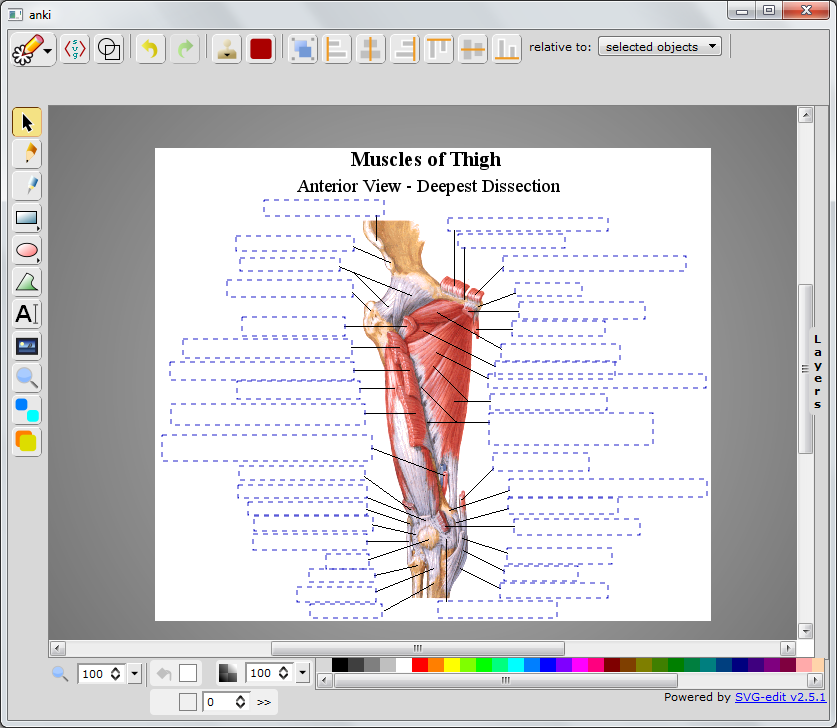
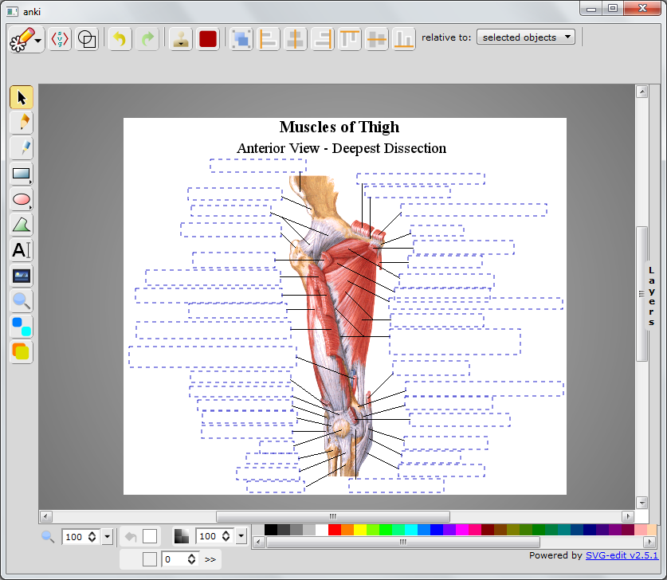
8
Agora que todas as
legendas estão escondidas, falta adicionar as cartas à colecção.
Para adicionar as cartas, clique num dos botões assinalados na figura (o significado de cada um dos botões é disutido mais abaixo):
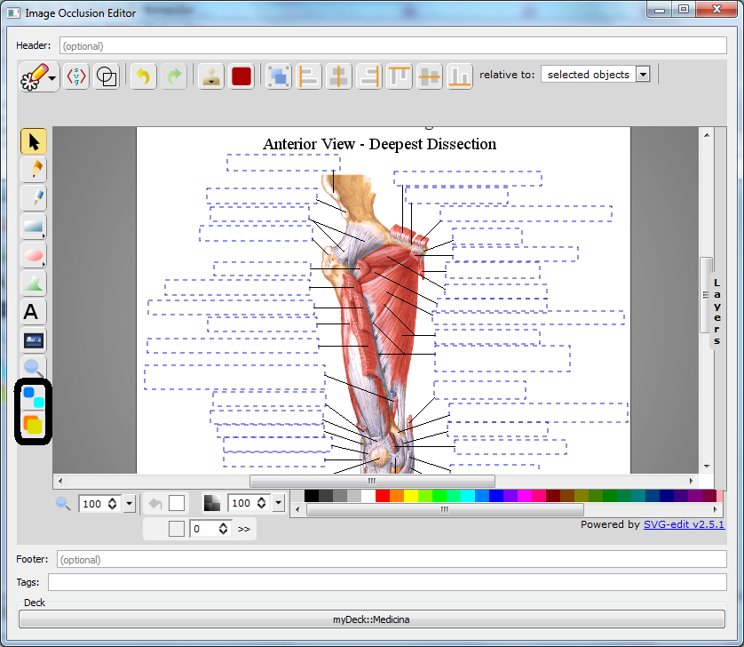
Se forem adicionadas muitas notas ao mesmo tempo, pode ser necessário esperar algum tempo.
Parabéns: adicionou o seu primeiro conjunto de cartas de Oclusão de Imagem
É apenas necessário recomeçar a partir do passo 1 (clique no botão de Oclusão de Imagem do editor e recomece a partir daí)
Para adicionar as cartas, clique num dos botões assinalados na figura (o significado de cada um dos botões é disutido mais abaixo):
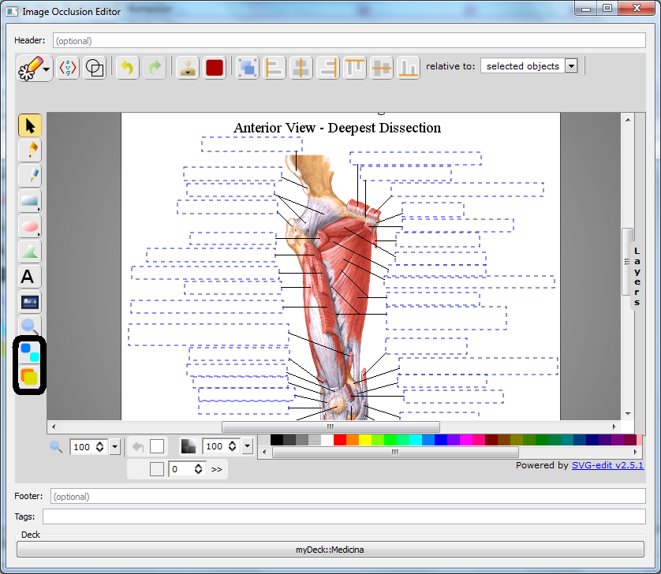
9
Uma caixa amarela (tooltip) irá aparecer indicanto quantas notas (ou cartas, visto que cada nota dá uma carta) foram adicionadas.Se forem adicionadas muitas notas ao mesmo tempo, pode ser necessário esperar algum tempo.
Parabéns: adicionou o seu primeiro conjunto de cartas de Oclusão de Imagem
10
Não feche a janela do editor de imagens! Um bug no kit gráfico Qt (utilizado pelo Anki) faz com que se o editor for fechado seja necessário reiniciar o Anki para adicionar mais cartas de Oclusão de Imagem. Enquanto a janela do editor for deixada aberta é possível adicionar cartas de Oclusão de Imagem a partir de qualquer número de imagens.É apenas necessário recomeçar a partir do passo 1 (clique no botão de Oclusão de Imagem do editor e recomece a partir daí)
Significado
dos Botões
Há dois botões:
| 1.
Sem sobreposição (non-overlapping) |
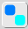 | (Mnemónica: note-se que as duas formas não se sobrepõem) |
| 2.
Com sobreposição (overlapping) |
 |
(Mnemónica: note-se que as duas formas se sobrepõem) |
Sem
sobreposição
Este botão é chamado com sobreposição
porque cria cartas na qual não há sobreposição de informação.
Isto porque o lado das perguntas das cartas esconde todas as legendas, mostrando a legenda que o utilizador tem de identificar com uma cor diferente, e a resposta mostra apenas essa legenda (e nenhuma das outras). Isto é o mesmo que mostrar uma frase com cloze deletion com todas as partes escondidas e perguntar apenas por uma delas.
Por exemplo:
Isto porque o lado das perguntas das cartas esconde todas as legendas, mostrando a legenda que o utilizador tem de identificar com uma cor diferente, e a resposta mostra apenas essa legenda (e nenhuma das outras). Isto é o mesmo que mostrar uma frase com cloze deletion com todas as partes escondidas e perguntar apenas por uma delas.
Por exemplo:
| Pergunta: |
Resposta: |
| |
Com
sobreposição
Este botão é
chamado com sobreposição porque cria cartas nas quais há sobreposição
de informação. Isto porque o lado das perguntas das cartas mostra todas
as legendas escondendo apenas aquela que o utilizador tem de
identificar, e a resposta mostra todas as legendas. Isto é o mesmo que
mostrar uma frase com "cloze deletion" com apenas uma parte escondida
para o utilizador identificar.
Por exemplo (compare-se com as imagens anteriores)
Por exemplo (compare-se com as imagens anteriores)
| Pergunta: |
Resposta: |
 |
 |
Qual utilizar?
Isso depende do
material que se está a adicionar, bem como das preferências pessoais de
cada um. Eu acredito que para imagens que consistem num desenho com
algumas legendas que apontam para partes da imagem, Oclusção de Imagem
sem sobreposição é melhor, porque impede o estudante de utilizar pistas
fornecidas pelo contexto para adivinhar uma resposta á qual não saberia
responder de outra maneira. Um utilizador que possa ver todas as
legendas excepto uma pode facilmente identificar a que falta. Apesar
desta conjectura, não tenho dados que mostrem a superioridade de nenhum
dos métodos nesta situação.
Por outro lado, em imagens em que o contexto é crucial, como um diagrama represntando um ciclo de bioquímica (por exemplo, o ciclo de Krebs), no qual os compostos vêm uns a seguir aos outros, tem de se utilizar Oclusão de Imagens com sobreposição. Não dá para se adivinhar que uma legenda está a esconder o composto B a não ser que se consiga perceber através do contexto que é criado a partir de A e origina C.
Aqui está um exemplo de uma carta de Oclusão de Imagem criada a partir de um diagrama do ciclo de Krebs:
Por outro lado, em imagens em que o contexto é crucial, como um diagrama represntando um ciclo de bioquímica (por exemplo, o ciclo de Krebs), no qual os compostos vêm uns a seguir aos outros, tem de se utilizar Oclusão de Imagens com sobreposição. Não dá para se adivinhar que uma legenda está a esconder o composto B a não ser que se consiga perceber através do contexto que é criado a partir de A e origina C.
Aqui está um exemplo de uma carta de Oclusão de Imagem criada a partir de um diagrama do ciclo de Krebs:
| Pergunta: |
Resposta: |
 |
 |
With non-overlapping image occlusion you
would have to memorize the
place of fumaric acid in this specific drawing of the cycle. With
overlapping image occlusion, you have only to memorize which compound
comes from succinic acid and
turns into malic acid, which
is exactly our goal.
Se se tivesse usado Oclusão de Imagem sem sobreposição seria necessário memorizar o lugar de ácido fumérico neste desenho específico do ciclo. Com sobreposição de imagem, apenas é necessário memorizar que composto é formado (por exemplo) a partir de succinato e origina malato, qiue é exactamente o nosso objectivo.
Se se tivesse usado Oclusão de Imagem sem sobreposição seria necessário memorizar o lugar de ácido fumérico neste desenho específico do ciclo. Com sobreposição de imagem, apenas é necessário memorizar que composto é formado (por exemplo) a partir de succinato e origina malato, qiue é exactamente o nosso objectivo.
Uso
avançado
Adicionar imagens a
partir da área de transferência (clipboard)
Se se tiver uma imagem na área de
transferência, como por exemplo uma captura de ecrã (screenshot), quando se clica no
botão Oclusão de Imagem, o addon não vai perguntar por um nome de
ficheiro e vai utilizar directamente a imagem na área de transferência.
A imagem vai ser eliminada da área de transferência imediatamente após
aparecer no editor de imagem. Se remover a imagem da área de
transferência é inconveniente, por favor informem o autor por email e
poder-se-á tornar essa opção configurável.
Beyond Rectangles
Apesar da discussão anterior utilizar
rectângulos como exemplo, é possível utilizar qualquer tipo de formas,
ou mesmo um grupo de formas para esconder partes da imagem. Utilizar um
gupo de formas pode ser útil para quem quiser esconder partes não
contíguas da imagem.
Este link (em inglês) tem um guia de instruções para o editor de imagem, que inclui instruções sobre como agrupar/desgrupar objectos.
Aqui está um exemplo de utilização de um grupo de dois rectângulos para esconder dois compostos químicos diferentes no ciclo de Krebs:
Este link (em inglês) tem um guia de instruções para o editor de imagem, que inclui instruções sobre como agrupar/desgrupar objectos.
Aqui está um exemplo de utilização de um grupo de dois rectângulos para esconder dois compostos químicos diferentes no ciclo de Krebs:
| Question: |
Answer: |
| 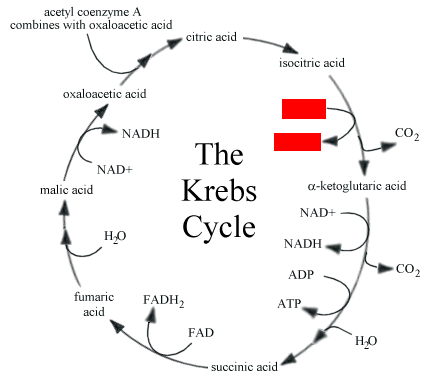 | |
Porque é que se escolheu esconder os dois compostos ao mesmo tempo? Bem , qualquer pessoa que saiba alguma bioquímica sabe que quando se vê NAD+ unm lado de uma equação químcia, NADH vai aparecer do outro lado (nem sempre, mas com uma frequência enorme no metabolismo humano). Se um destes compostos é mostrado na imagem, identificar o outro não requer conhecimento nenhum da reacção químicas específica que se está a estudar. Ora, o objectivo é testar o conhecimento do ciclo de Krebs, e não ver se o utilizador sabe ou não uma regra básica da bioquímica, e por esta razão esconde-se os dois compostos ao mesmo tempo. Como estes compostros estão rão associados por esta altura (para compreender o ciclo de Krebs é necessário saber o básico, nomeadamente o que são o NAD+ e o NADH), o par funciona como um chunk, e não estamos a contradizer o princípio da informação mínima.
Editar
a imagem antes de desenhar as formas
É possível editar a imagem antes de
desenhar as formas. O editor contém um painel denominado Layers (camadas). Se se clicar na
palavra Layers, o painel vai
aparecer. Normalmente, a camada Shapes
(formas) está activa, o que quer dizer que qualquer coisa que se
desenhe é interpretada como sendo uma forma destinada a esconder parte
da imagem.
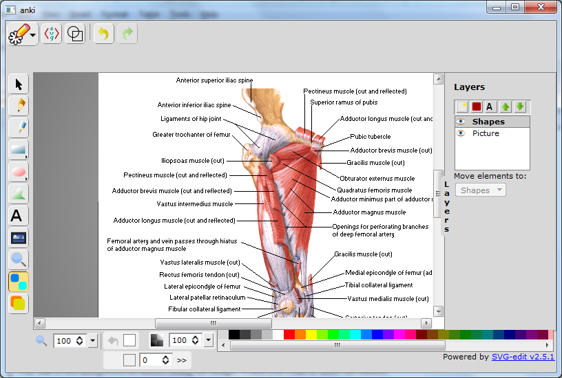
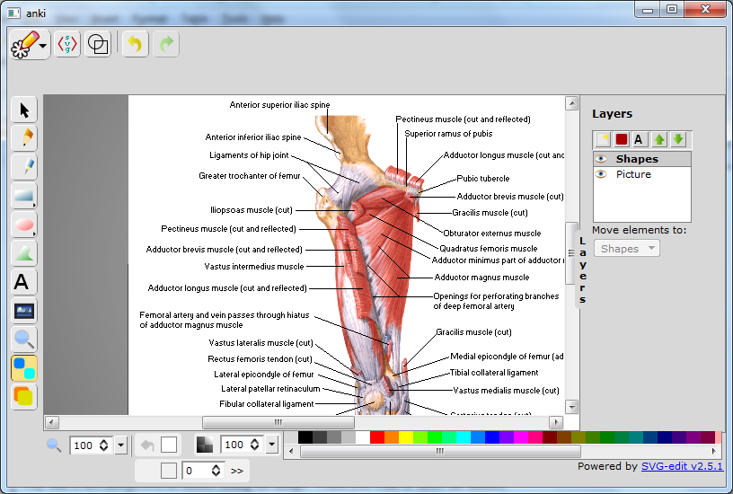
Mais
informação
Mudar
as Definições Padrão
Na versão actual, é possível mudar:
- a cor inicial dos rectângulos [o valor padrão é branco]. Independentemente da cor
inicial, é possível mudar a cor dos rectângulos no editor de imagem.
- A cor do rectângulo que aparece na pergunta [valor padrão é vermelho, como mostram
os exemplos]. Esta opção não pode ser miudade no editor de imagem
Para mudar estas definições, aceda ao
menu Tools > Image Occlusion 2.0
(options), como indicado na figura:
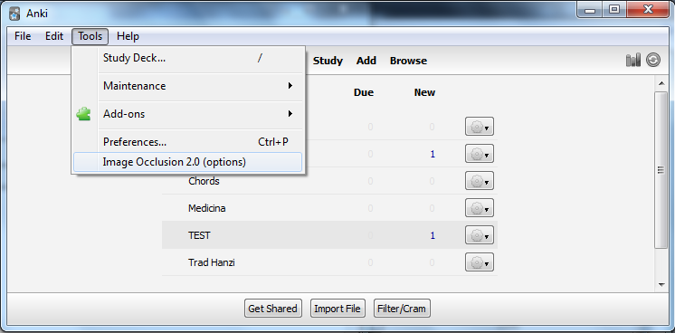
A janela seguinte irá aparecer:
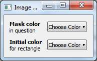
Clique no botão Choose Color e será apresentada uma palete de cores de onde se é possível escolher uma cor.
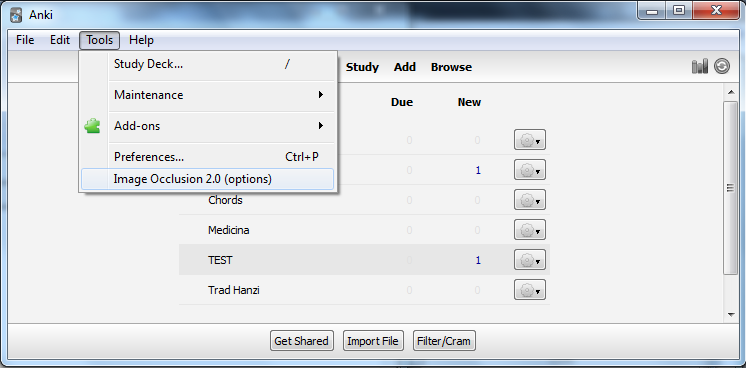
A janela seguinte irá aparecer:
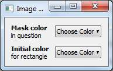
Clique no botão Choose Color e será apresentada uma palete de cores de onde se é possível escolher uma cor.
Ajuda
É possível aceder a
esta documentação no menu de ajuda da janela principal do Anki.

Planos
para o futuro
O problema mais importante que precisa
de ser resolvido é o bug principal, descrito na
FAQ, mas de momento não há nada fácil que se possa fazer. Aceitam-se
sugestões.
FAQ (preguntas frequentes):
Que editor de imagm é este? é o
svg-edit, um editor escito em javascript e HTML que pode ser
descarregado no site
oficial. Nenhum do código principal fou tocado, e apenas foi
escrita uma extensão.
Onde é que posso saber mais acerca do editor? pode consultar o site oficial. Contém imensa documentação e pode dar ideias sobre como utilizar todas as potencialidades do svg-edit para criar cartas de Oclusão de Imagem. No entanto, na minha opinião nada bate o velho rectângulo ou grupos de rectângulos. Este guia (em inglês) também pode ser útil.
Sometimes, the editor refuses to appear correctly. Why? This is probably due to a bug in Qt (the graphical user interface library used by Anki), more specifically in the WebKit engine. In my system (Windows 7), the editor is always displayed correctly the first time it is used, but if I try to use it again without restarting Anki, it fails to appear correctly. If I restart Anki, the editor works again. In your system it may be different. To avoid this situation, please keep the image editor window open until you shut down Anki. This way, you should be able to add Image Occlusion cards from as many images as you want. This is not an ideal situation, and it might be fixed in a new addon version.
Posso adicionar imagens a partir da áre de transferência (clipboard) ? Sim!
Porque é que este addon se chama Image Occlusion 2.0? Há algum addon chamado Image Occlusion 1.0? Há algum tempo eu escrevi um outro addon chamado Image Occlusion. Eu considero o presente addon como um sucessor do Image Occlusion, porque está muito melhor integrado com o Anki, é muito mais fácil de instalar e é mais fácil de personalizar. No entanto, por causa do bug discutido nauma das questões anteriores, não posso simplesmente remover o addon anterior e substituí-lo por este. Foi por isso que decidi dar-lhe um novo nome e manter os dois simultaneamente. Dito isto, o meu otro addon também está cheio de bugs em algumas plataformas e normalmente não funciona na maioria do sistemas Linux (provavelmente devido a um problema do Inkscape), e portanto aqueles que não conseguem por a funcionar o Image Occlusion correctamente,podem querer tentar o Image Occlusion 2.0.
Tenho outra questão! O autor pode ser contactado (em ingês e em português) pelo seguinte email: tmbb@campus.ul.pt
Onde é que posso saber mais acerca do editor? pode consultar o site oficial. Contém imensa documentação e pode dar ideias sobre como utilizar todas as potencialidades do svg-edit para criar cartas de Oclusão de Imagem. No entanto, na minha opinião nada bate o velho rectângulo ou grupos de rectângulos. Este guia (em inglês) também pode ser útil.
Sometimes, the editor refuses to appear correctly. Why? This is probably due to a bug in Qt (the graphical user interface library used by Anki), more specifically in the WebKit engine. In my system (Windows 7), the editor is always displayed correctly the first time it is used, but if I try to use it again without restarting Anki, it fails to appear correctly. If I restart Anki, the editor works again. In your system it may be different. To avoid this situation, please keep the image editor window open until you shut down Anki. This way, you should be able to add Image Occlusion cards from as many images as you want. This is not an ideal situation, and it might be fixed in a new addon version.
Posso adicionar imagens a partir da áre de transferência (clipboard) ? Sim!
Porque é que este addon se chama Image Occlusion 2.0? Há algum addon chamado Image Occlusion 1.0? Há algum tempo eu escrevi um outro addon chamado Image Occlusion. Eu considero o presente addon como um sucessor do Image Occlusion, porque está muito melhor integrado com o Anki, é muito mais fácil de instalar e é mais fácil de personalizar. No entanto, por causa do bug discutido nauma das questões anteriores, não posso simplesmente remover o addon anterior e substituí-lo por este. Foi por isso que decidi dar-lhe um novo nome e manter os dois simultaneamente. Dito isto, o meu otro addon também está cheio de bugs em algumas plataformas e normalmente não funciona na maioria do sistemas Linux (provavelmente devido a um problema do Inkscape), e portanto aqueles que não conseguem por a funcionar o Image Occlusion correctamente,podem querer tentar o Image Occlusion 2.0.
Tenho outra questão! O autor pode ser contactado (em ingês e em português) pelo seguinte email: tmbb@campus.ul.pt